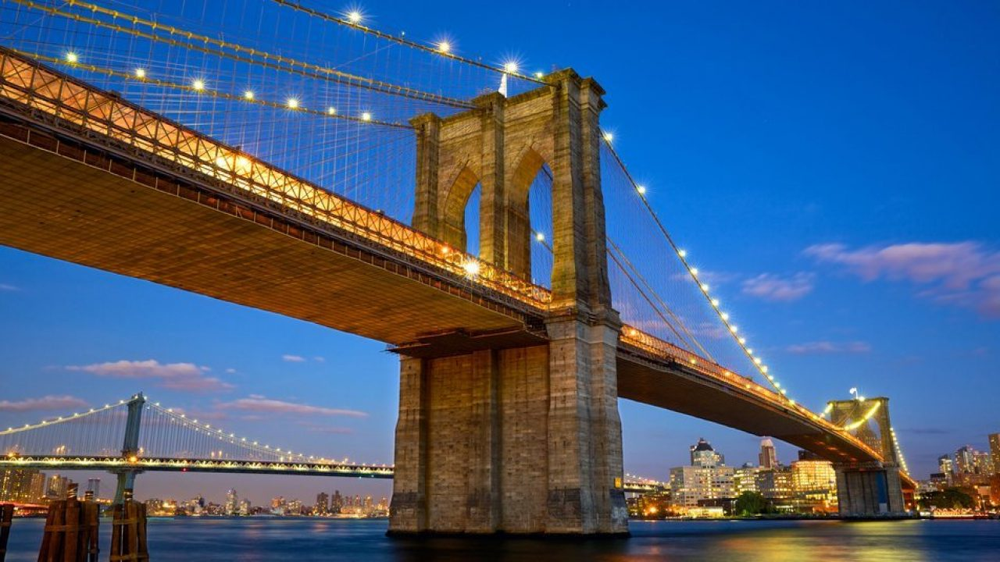
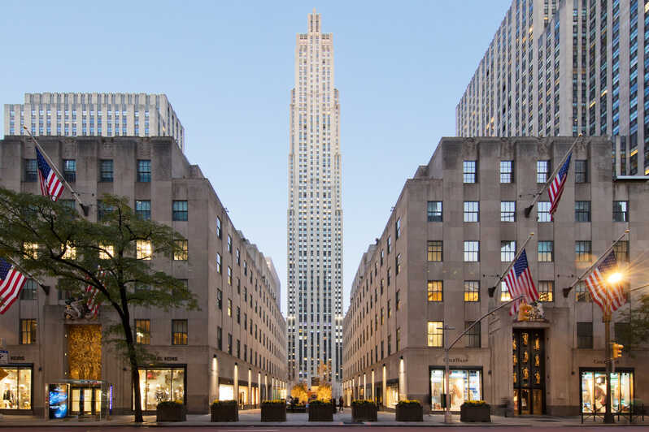
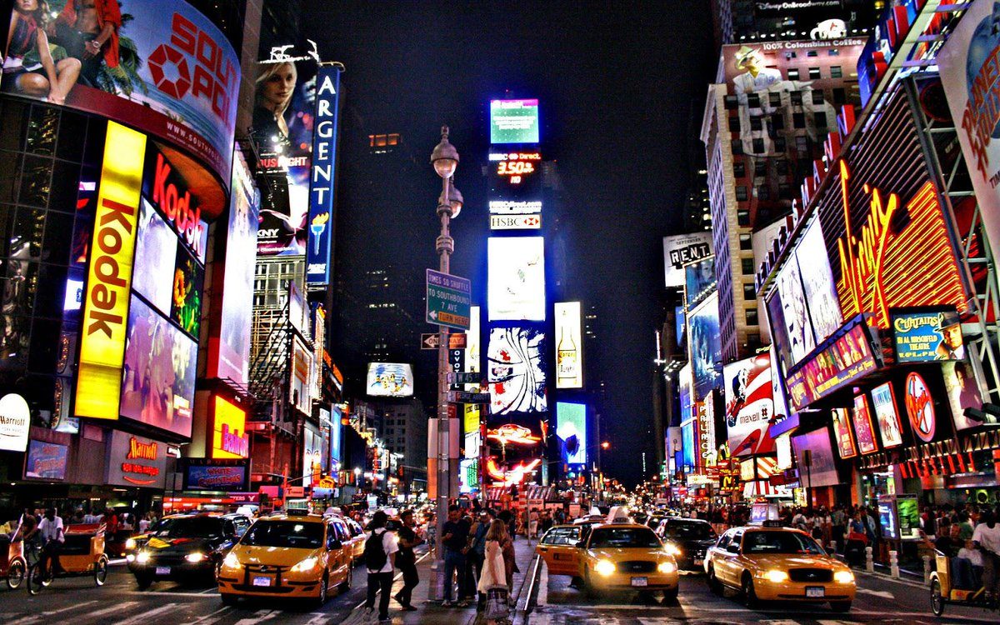

Central Park, escenario de numerosas películas y series, es uno de los parques urbanos más grandes del mundo y uno de
los símbolos indiscutibles de Nueva York.
Central Park es el parque urbano más grande de Nueva York y uno de los más grandes el mundo. Mide más de 4 kilómetros de
largo y 800 metros de ancho.
En las 340 hectáreas que ocupa Central Park encontraréis praderas, lagos artificiales, cascadas y zonas que parecen un
auténtico bosque. Dentro del propio parque también se encuentra el Zoo de Central Park y otras atracciones.
Ubicación
El parque se encuentra rodeado por calles muy transitadas, como ser al este con Quinta Avenida, al sur con la Calle 59 o
también llamada Central Park Sur, al norte con la calle 110, también llamada Central Park Norte, y al oeste con la
denominada Central Park Oeste que conserva su nombre al igual que la Quinta Avenida.
Festivales
Todos los veranos se realizan en el Central Park diferentes festivales teatrales, el más importante es el renombrado
Shakespeare en el parque, realizado desde los comienzos del parque o presentaciones de teatro independiente como el
teatro Delacorte que se realizan al aire libre. También se realizan conciertos y anualmente acude la Filarmónica de
Nueva York, presentándose al aire libre en la Opera del Metropolitan o en el Great Lawn. Desde sus comienzos el parque
eligió los mejores cantautores como por ejemplo a Simon and Garfunkel en 1981, Dave Matthews Band en el 2003 y a Diana
Ross en 1983 entre muchos otros.
Estatua de la Libertad
Estatua de la Libertad lleva más de un siglo siendo el icono más reconocible de los Estados Unidos, y sigue
iluminando al mundo con su antorcha de libertad desde su atalaya en la isla Liberty, en las aguas del puerto
de Nueva York.
Símbolo de la luz y de la democracia, se convirtió también en madre adoptiva de los millones de inmigrantes
que llegaron a Nueva York desde diversos puntos del mundo en procesos migratorios y aún hoy, muchos de los
descendientes de aquellas personas, estadounidenses de segunda o tercera generación recuerdan que sus
antepasados tuvieron a la Estatua de la Libertad como primera imagen del sueño americano.
Como llegar a la Estatua de la Libertad
Visitar la Estatua de la Libertad requiere cierta preparación y reservas con antelación. El monumento se
encuentra en
una isla y una vez allí existen diferentes espacios visitables, con determinadas restricciones que hay que
conocer.
La única forma de visitar la Estatua de la Libertad y el cercano museo de Ellis Island es mediante los ferrys
que operan
con la compañía Statue Cruises, que parten del Lower Manhattan, de Battery park. Ninguna otra compañía tiene
permiso
para atracar en la isla.
Las paradas de metro más cercanas son las de Bowling Green, South Ferry Station, Rector St o Wall st Station.
Existe otro punto de salida en New Jersey, en el Hudson River at Liberty State Park.
Entradas para visitar la Estatua de la Libertad
El coste de visitar la estatua es el ticket del ferry. Una vez allí, solo se paga si se quiere subir a la
corona, una
visita que requiere reserva previa por internet con bastante antelación.
El precio de la entrada incluye la audioguía y la visita a Ellis Island y su interesante museo de la
inmigración.
Merece la pena hacer la reserva previa para evitar colas y elegir la hora óptima.
precios rondan los 18$ por adulto con tarifas reducidas por niño e incluye la visita a la isla y la
subida al
mirador del pedestal. Con visita a la corona, precio sube a 21$, pero se requiere reserva previa con
antelación de
meses, ya que el número de personas autorizadas a subir a la corona es muy pequeño cada día.
¿Se puede ver de cerca la Estatua sin desembarcar en ella?
Sin duda. Aunque solo una compañía tiene permiso para atracar en la isla Liberty (Statue Cruises), hay muchas
que
realizan cruceros en barco por Nueva York que pasan muy cerca y te permiten sacar fotos excelentes. Recomendamos
visitar
nuestra sección de cruceros en Nueva York para ver las mejores opciones.
Además, siempre te queda la posibilidad de subir en el ferry gratuito de Staten Island, que no pasa tan cerca
como otros
pero te ofrecerá estampas atractivas.
Empire State Building
Hay un edificio en Nueva York que es conocido tanto por los turistas que quieren viajar a la gran manzana
como por
aquellas personas que solo han oído hablar de la gran ciudad americana en contadas ocasiones. Ese edificio
es el Empire
State. Un lugar no solo famoso y conocido por lo que durante años ha representado para Nueva York. Hay que
recordar que
durante cuarenta años ostentó el título del rascacielos más alto de toda la ciudad, perdiéndolo solo tras la
construcción de las Torres Gemelas, actualmente ocupa el tercer puesto en edificios de mayor altura de la
cosmopolita
urbe.
Así nació el Empire State
Hay que remontarse a 1931, concretamente al 1 de mayo para ver brillar como nunca al Empire State. Y es que en
esa fecha
fue cuando se inauguró el edificio. Según lo que cuentan las crónicas del momento, debió de ser un espectáculo
digno de
admiración, ya que se fueron accionando paulatinamente las luces de todos los pisos del complejo.
A partir de esa fecha y hasta unos cuarenta años más tarde, el Empire State fue el edificio más alto de todo
Nueva York.
No es apto para personas con vértigo, aunque en la gran manzana, si no se visitan lugares con vistas parece que
no luce
el viaje. El Empire State tiene 102 pisos y se construyó en plena crisis económica americana, de ahí que tras su
inauguración solo se completó el 25% del edificio y muchos pasaron a apodarlo ‘Empty State Building’.
Choca que un edificio de tales características solo tardara un año en construirse. De hecho, el hotel que
anteriormente
ocupaba su puesto se vendió en 1928 y no fue hasta 1930 cuando comenzaron las obras del Empire State Building.
¿Conoces
algún otro edificio que mida 443,2 metros de altura, que tenga 102 pisos, una antena de 62 metros y que se haya
construido en poco más de un año? Por lo pronto tenemos al Empire State Building. Para completar los trabajos
tuvieron
que construirse los pisos a gran velocidad, con un promedio de 4 pisos y medio por semana. Y todo apunta a que
es un
lugar con una sólida estructura.
Accesos al Empire State
Te encuentres donde te encuentres en Nueva York, seguro que verás la icónica antena del Empire State. El famoso
rascacielos lo localizarás en el número 350 de la Quinta Avenida. Como seguro que habrás averiguado, al ser uno
de los
sitios más representativos de Nueva York es también uno de los más concurridos. Y es que al año recibe la visita
de más
de 3 millones de personas procedentes de todas partes del mundo. Es una atracción de máxima afluencia por lo que
te
recomendamos reservar entrada sin colas para El Empire State de Nueva York.
Si tienes problemas para poder llegar al lugar, si le preguntas a cualquier persona seguro que sabrá indicarte.
No
obstante, si prefieres moverte a tu aire, te aconsejamos coger el metro, que es un medio de transporte más
rápido que el
autobús y con más frecuencia de paso. Si sigues este consejo, úsalo desde la 34 th Street hasta la Penn Station.
Para
ello deberás tomar las líneas 1,2,3,A,C y E. Aunque también puedes partir desde este sitio, pero si optas por
las líneas
B, D, F, N, Q y R, tendrás que bajarte en la Avenue of the Americas.
Una de las grandes ventajas del Empire State Building es su amplio horario de visitas. Al contrario que otros
monumentos
visitables de Nueva York, este edificio abre desde las 8 de la mañana hasta las 2 de la madrugada, de manera que
el
turista pueda escoger cuándo ver desde arriba toda la ciudad: por la mañana, tarde o noche. Nosotros nos
inclinamos más
por hacerlo al atardecer, que es cuando se empiezan a iluminar todos los edificios de la gran manzana, aunque
también a
esta hora es cuando sube más gente.
Los increíbles miradores del Empire State
El observatorio del Empire State no está en el último piso, sino en el número 86, aunque sí que es cierto que si
subes
hasta la planta 102 puedes acceder a un observatorio de pequeñas dimensiones desde donde se aprecia la ciudad en
todo su
esplendor.
Ambos miradores cuentan con grandes prismáticos para que puedas observar con detenimiento otros edificios o
zonas de
Manhattan. Además, en concreto, el del piso 86 da la vuelta a toda la azotea, con lo que se pueden tomar fotos
con
tranquilidad desde cualquier ángulo del edificio.
El Puente Brooklyn

El Puente de Brooklyn es mucho más que un obra de ingeniería o un mero nudo de comunicación entre dos zonas
de la
ciudad. Este puente es todo un icono de la ciudad de Nueva York y un destino turístico en sí mismo para casi
todos los
turistas, a los que les encanta pasear por su superficie y disfrutar de las estupendas vistas y ambiente que
ofrece.
El puente es uno de los principales atractivos de los paseos en helicóptero o de los cruceros panorámicos en
Nueva York.
Es además un sitio privilegiado para tomar fotos del skyline de Manhattan o para dar un paseo en bicicleta.
Fue
construido entre 1869-1883, por lo que es un tesoro arquitectónico.
El puente se levanta a 84 metro del agua y tiene una longitud total de 1.825 m, siendo su paso peatonal de
1.600 metros.
Cómo organizar el paseo
Lógicamente hay dos opciones para recorrer caminando o en bicicleta el puente, que son partiendo de Manhattan o
desde
Brooklyn. Las dos tienen su encanto, aunque la visualmente más atractiva es partiendo de Brooklyn, con la vista
de
Manhattan al fondo. La mayoría de los turistas sin embargo parten de Manhattan y cruzan el puente como un
atractivo más
de su visita al Lower Manhattan, con visita a atracciones cercanas como St, Paul’s Chapel, el City Hall, Wall
Street, el
monumento al 11s, el Ferry de Staten island y tantas otras.
Si quieres ir directamente al punto de partida del puente en Manhattan, el punto de referencia más cercano para
el
transporte público es el City Hall. El acceso al paso peatonal del puente se encuentra junto a este edificio, en
una
zona con jardines. De todas formas, verás mucha gente por la zona y la mayoría van a hacer la visita al puente,
así que
no hay pérdida.
Si quieres salir de Brooklyn, la parada de metro más conveniente es la de High Street Station, a pocos cientos
de metros
del comienzo del paso peatonal y visible al salir de la estación. Si partes de Brooklyn o llegas aquí desde
Manhattan es
una pena no visitar los atractivos de este barrio como el Brooklyn Bridge Park, la famosa pizzería Grimaldi o el
paseo
panorámico paralelo al Hudson con sus increíbles vistas de Manhattan. También puedes visitar la encantadora y
cercana
zona de Brooklyn Heights
Consejos para visitar el puente
El puente está abierto las 24 horas del día y cualquier momento es bueno para la visita, aunque la caída de la
noche
es especialmente mágica, con la Estatua de la Libertad iluminada y las primeras luces nocturnas de ambas orillas
del
puente. El puente es seguro de noche, por la afluencia de turistas y neoyorquinos, que abundan hasta
aproximadamente las
23 horas.
Ojo con el clima. En tu paseo por el puente estarás expuesto a la climatología de forma directa y puedes pasar
mucho
frío.
Respeta la zona de paso peatonal y la ciclista. Los ciclistas locales son especialmente agresivos si ocupas su
carril
reservado.
Rockefeller Center

Hables con quien hables de Nueva York, seguro que sale en la conversación el Rockefeller Center, el complejo
de oficinas
más famoso de la Gran Manzana y una zona por la que cualquier turista en Nueva York pasará durante su
estancia en la
ciudad. El Rockefeller Center es uno de los lugares de rascacielos más conocidos de todo Nueva York, situado
entre la
Quinta y la Sexta Avenida, está compuesto por edificios tan importantes a nivel comercial como General
Electric, pero no
solo eso, pues en esta zona también se ubica un gran complejo de entretenimiento.
De hecho, una de las pistas de patinaje sobre hielo más conocidas de Nueva York se ubica en Rockefeller
Center. Te damos
algunas pistas extra sobre este lugar tan emblemático del país americano.
Ubicación
Enorme. Esa es la palabra perfecta para describir el Rockefeller Center, un complejo de una veintena de
edificios que
ocupa hasta tres manzanas de Manhattan. Se ubica entre la Quinta y la Sexta Avenida, concretamente en el barrio
Midtown
de Manhattan. Si vas paseando por Central Park y quieres llegar a Rockefeller Center, acércate a la parte sur
del
parque, pues por ahí podrás acceder al gran complejo comercial y de entretenimiento.
Alrededor de esa zona también darás con lugares emblemáticos de Nueva York como son el Empire State, Times
Square o la
Grand Central Terminal. Una de sus ventajas, además, es que es fácil acceder a este lugar, pues tiene estaciones
de
metro cerca y está muy bien conectado con otras zonas de la urbe.
Qué ver en Rockefeller Center
Rockefeller Center es un complejo de edificios comerciales. En esta zona de Manhattan se pueden encontrar los
sitios más
selectos y exquisitos de la gran manzana. Sin duda es un lugar muy indicado para el ocio. Y es que si estás en
Nueva
York y lo que quieres es ir de compras, terminarás con toda seguridad en esta zona de la ciudad o, al menos si
no para
comprar en las boutiques más exclusivas de la capital, para ver y visitar las tiendas donde la gente adinerada
de la
cosmopolita urbe realiza sus compras.
Entre las zonas turísticas por excelencia en Rockefeller Center destacan el Radio City Music Hall, que es el
teatro más
importante de la ciudad y que destaca, sobre todo en Navidad con su espectáculo Radio City Christmas
Spectacular, que se
representa allí desde 1933.
El Mirador del Rockefeller Center también te dejará maravillado. Compite con el Empire State en vistas. Y no
desmerecen
en nada al segundo. Ofrece una vista impresionante desde las alturas de Nueva York y, además, se puede apreciar
el
edificio del Empire State. Es muy recomendable subir de noche, pues Nueva York gana mucho cuando cae el sol.
Times Square

El Times Square es una intersección de avenidas en Manhattan (Nueva York, Estados Unidos). Antes llamada Plaza Longacre,
está situada en la esquina de la avenida Broadway y la Séptima Avenida. Recibió su nombre actual por las oficinas de The
New York Times, que se encontraban en el edificio One Times Square.
Con sus miles de luces y enormes carteles publicitarios, Times Square se ha convertido en la imagen más conocida de
Nueva York.
En Times Square se agolpan bares, restaurantes, teatros, museos y ambiente, mucho ambiente. Al caer la noche, las luces
de Times Square lo iluminan todo.
Historia de Times Square
Tal como lo conocemos, Times Square tiene una historia relativamente reciente ya que, hasta finales de los 90, la zona
era sinónimo de crimen y drogas.
Durante el mandato del alcalde Rudolph Giuliani a finales de siglo, Times Square fue reciclado para pasar a convertirse
en una de las mejores zonas de Nueva York.
Luces de Colores
Los monumentales letreros de neón y pantallas LED preceden su reputación.
El resplandor de los gigantescos letreros de luces LED y neón se puede ver de buena parte del Midtown e incluso desde
Brooklyn.
Es realmente impresionante y una de los lugares más importantes de Nueva York sin duda alguna.
Una buena idea es acercarse antes de que oscurezca e instalarse en los escalones rojos para disfrutar cuando todo
comience a refulgir.